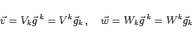
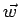
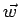

Inhalt Index DeskTop Bronstein

 Lineare Algebra Tensoren Tensoren in krummlinigen Koordinatensystemen Kovariante, kontravariante und gemischte Koordinaten von Tensoren 2. Stufe
Lineare Algebra Tensoren Tensoren in krummlinigen Koordinatensystemen Kovariante, kontravariante und gemischte Koordinaten von Tensoren 2. Stufe


In einem festgelegten Koordinatensystem wird mit Hilfe des Tensors T gemäß (4.89) durch
mit
|  | (4.92b) |
eine lineare Beziehung zwischen den Vektoren  und  hergestellt. Deshalb wird (4.92a) auch als lineare Vektorfunktion bezeichnet.
und  hergestellt. Deshalb wird (4.92a) auch als lineare Vektorfunktion bezeichnet.